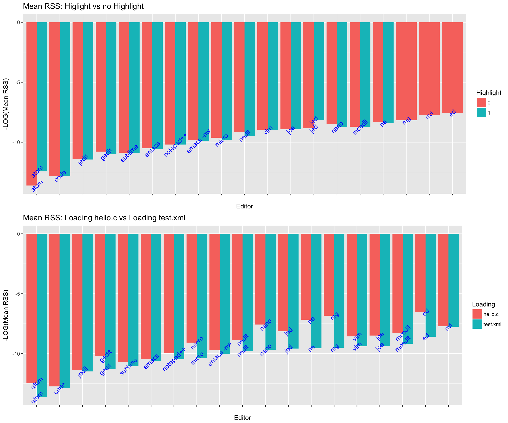
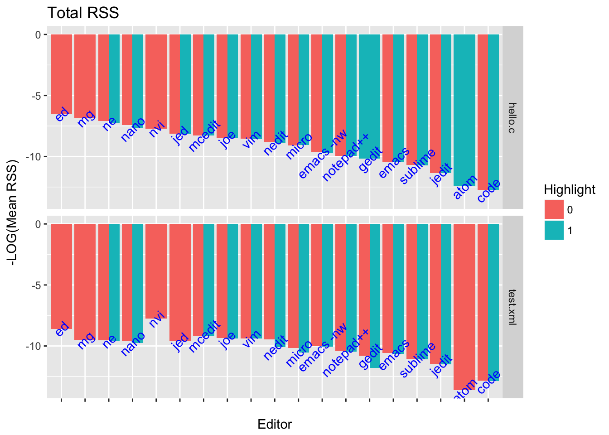
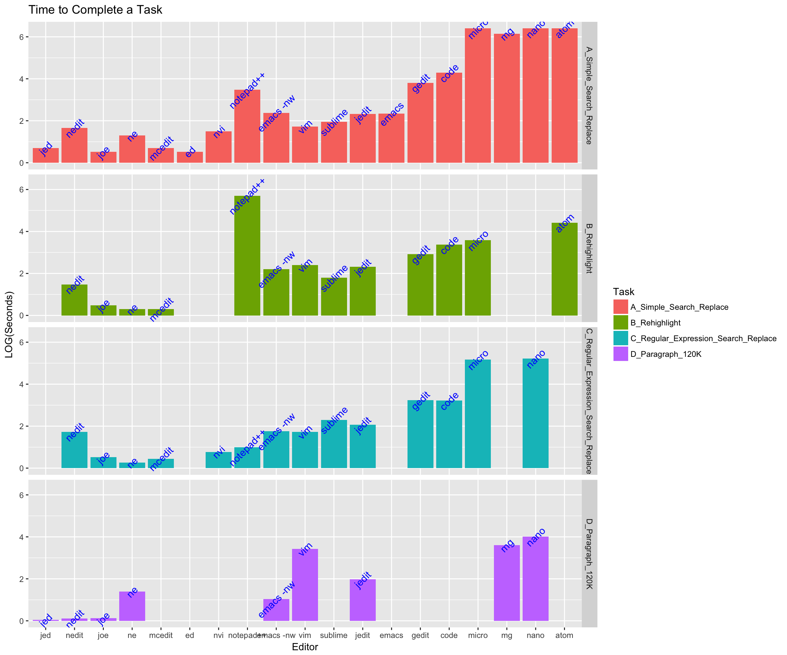
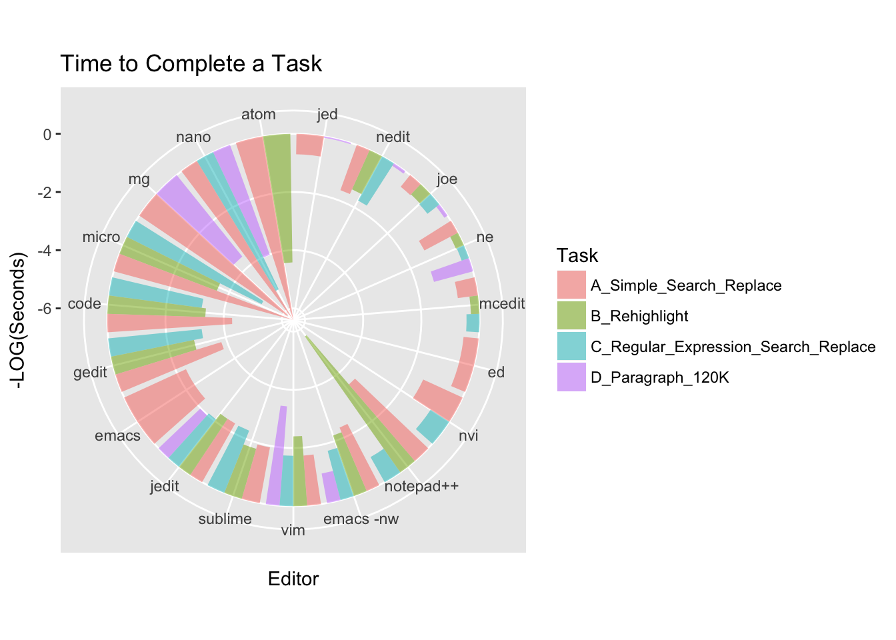
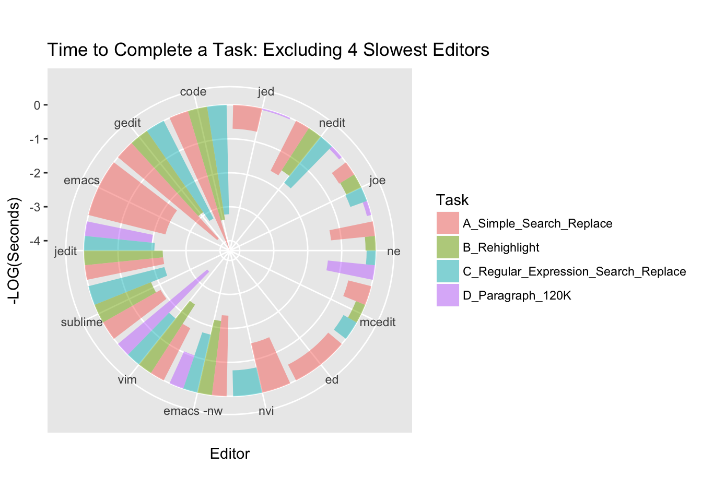
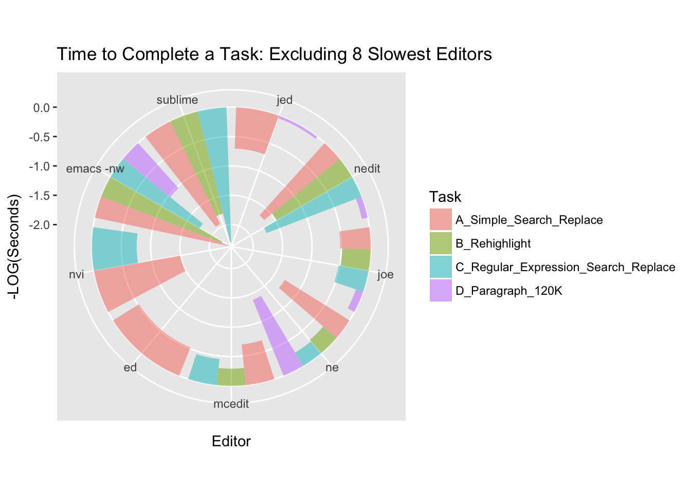
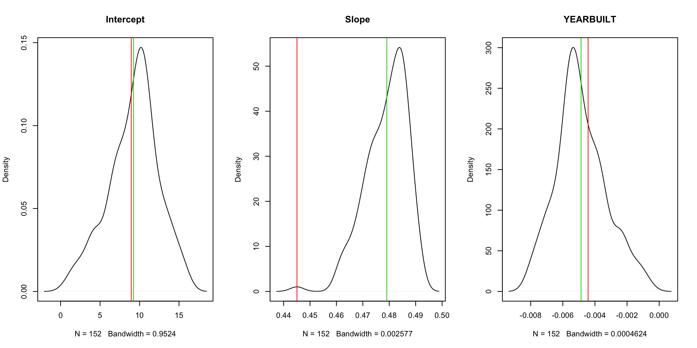
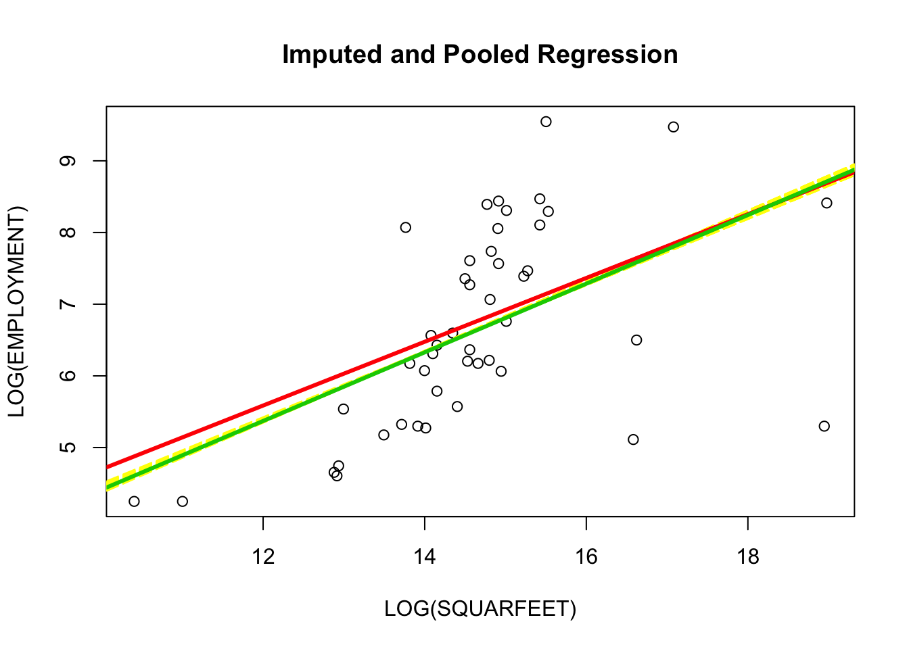

For this exercise we are using the data from this github page. The page contains a number of tables with data for how different test editors preform completing different tasks. One set of tasks tested how much memory a text editor uses, and the second set of tasks measures the time performance. We loaded the data by first creating \.csv files via copy-paste. The only one change made to the data was the exclusion of the mcedit text editor performance on the D_Paragraph_120K task because it crashed. Also the data for loading the 3GB files was not used only 5 editors managed to complete the task.
For the purpose of visualization the time and memory measures were transformed to the log scale. Also we sometimes use the negative of the performance measure, in which case the more negative the measure the worse is the performance.
setwd("~/Box_Sync/UM_Winter_2017/STATS 701")
library(dplyr)
library(ggplot2)
library(ggthemes)
library(gridExtra)
library(stringr)
library(mice)
dt = read.csv("hw2q1.csv", header = T)
dt$Highlight = as.factor(dt$Highlight)
dt$Loading = as.factor(dt$Loading)
dt$RSS = log(dt$RSS + 1)
mean_rss = dt %>% group_by(Editor,Highlight) %>%
summarise(mean_RSS = mean(RSS), n = n()) %>%
arrange(desc(mean_RSS))
mean_rss$Editor = factor(mean_rss$Editor, levels = as.character(unique(mean_rss$Editor)))
g1 = ggplot(mean_rss, aes(x = Editor, y = -mean_RSS, label = Editor)) +
geom_col(aes(fill = Highlight), position="dodge") +
geom_text(angle = 45, check_overlap = TRUE, color = "blue") +
scale_x_discrete(labels = rep("", nrow(mean_rss))) +
labs(title = "Mean RSS: Higlight vs no Highlight", y = "-LOG(Mean RSS)")
mean_rss2 = dt %>% group_by(Editor,Loading) %>%
summarise(mean_RSS = mean(RSS), n = n()) %>%
arrange(desc(mean_RSS))
mean_rss2$Editor = factor(mean_rss2$Editor, levels = as.character(unique(mean_rss2$Editor)))
g2 = ggplot(mean_rss2, aes(x = Editor, y = -mean_RSS, label = Editor)) +
geom_col(aes(fill = Loading), position="dodge") +
geom_text(angle = 45, check_overlap = TRUE, color = "blue") +
scale_x_discrete(labels = rep("",nrow(mean_rss))) +
labs(title = "Mean RSS: Loading hello.c vs Loading test.xml", y = "-LOG(Mean RSS)")
dt$Editor = factor(dt$Editor, levels = unique(dt$Editor[order(dt$RSS)]))
g3 = ggplot(dt, aes(x = Editor, y = -RSS, label = Editor)) +
facet_grid(Loading ~ .) +
geom_col(aes(fill = Highlight), position="dodge") +
scale_x_discrete(labels = rep("",nrow(mean_rss))) +
geom_text(angle = 45, check_overlap = TRUE, color = "blue") +
labs(title = "Total RSS", y = "-LOG(Mean RSS)")
grid.arrange(g1,g2, nrow = 2, ncol = 1)
From the first two plots we can see that for non-highlighted loading atom uses the most memory while ed is the lightest on memory. For highlighted loading atom is again the heaviest and ne is the lightest. ed doesn’t support highlighting or a measure for a test is not in the data. We can also notice that for most editors highlighted loading task a little more memory. atom is an exception for this. This might be random error however; we font know how many tests were preformed.
When comparing which editor is lightest or heaviest for loading either hello.c or test.xml we can see that atom is the heaviest for test.xml, code is heaviest for hello.c, nvi is lightest for test.xml and ed is lightest for hello.c.
g3
In the second set of bar charts we can compare the interaction effects on memory use between highlighting and different files. code is the heaviest when loading hello.c both with and without highlighting. For loading test.xml we have a similar result, except atom is heavier highlighted text. atom might be worse for non-highlighted text too but we don’t have a measurement for that. ne is the lightest out of all editors where interactions are observed. However nvi is lightest with non-highlighted ‘test.xml’ while ed is lightest for non-highlighted hello.c.
library(gridExtra)
dt2 = read.csv("hw2q1b.csv", header = TRUE, nrows = 55)
dt2$Editor = factor(dt2$Editor, levels = unique(dt2$Editor[order(dt2$Time)]))
g4 = ggplot(dt2, aes(x = Editor, y = log(Time + 1), fill = Task, label = Editor)) +
geom_col(position = "dodge") +
facet_grid(Task ~ .) +
geom_text(angle = 45, check_overlap = TRUE, color = "blue") +
labs(title = "Time to Complete a Task", y = "LOG(Seconds)")
p1 = ggplot(dt2, aes(y = -log(Time+1), x = Editor, group = Task, fill = Task)) +
coord_polar() +
geom_col(alpha = 0.5, position = "dodge") +
labs(title = "Time to Complete a Task", y = "-LOG(Seconds)")
dtt2 = dt2 %>% filter(Editor != "atom") %>%
filter(Editor != "nano") %>%
filter(Editor != "mg") %>%
filter(Editor != "micro") %>%
filter(Editor != "notepad++")
p2 = ggplot(dtt2, aes(y = -log(Time + 1), x = Editor, group = Task, fill = Task)) +
coord_polar() +
geom_col(alpha = 0.5, position = "dodge") +
labs(title = "Time to Complete a Task: Excluding 4 Slowest Editors", y = "-LOG(Seconds)")
dtt3 = dtt2 %>% filter(Editor != "code") %>%
filter(Editor != "gedit") %>%
filter(Editor != "vim") %>%
filter(Editor != "emacs") %>%
filter(Editor != "jedit")
p3 = ggplot(dtt3, aes(y = -log(Time + 1), x = Editor, group = Task, fill = Task)) +
coord_polar() +
geom_col(alpha = 0.5, position = "dodge") +
labs(title = "Time to Complete a Task: Excluding 8 Slowest Editors", y = "-LOG(Seconds)")
g4
The above plot really shows how incomplete the time performance data is. Nonetheless we can see that for task A atom is the slowest while ed is the fastest. For task B notepad++ is the slowest while mcedit is the fastest. For task C nano is the slowest while ne is the fastest. And finally for task D nano is the slowest while jed is the fastest. Visually ne and joe look like the all around quickest editors.
The next three plots is just a different way to convey the same information, though the scale is negative here. To choose an editor you might want to look at the one that has the lowest bars but has all four colors.
p1
p2
p3
Here we will be using this data set about the automotive facilities in Southeast Michigan. We download the data set and load the \.csv file into the environment. Furthermore we select the relevant columns.
auto = read.csv("Automotive_Facilities.csv", header = T)
auto = auto[,c(11,12,13,16)]Next we do a little bit of data cleaning. First we take out facilities that are said to be idle in the COMMENTS variable. Then we delete rows where the area of the facility is indicated to be 0 and where employment is indicated to be 0. Lastly we are left with NA values in the YEAR variable which we plan to impute.
auto = auto[-str_which(auto$COMMENTS,"[Ii]dle"),]
auto = auto[!auto$SQUAREFEET == 0 ,-4]
auto = auto[!auto$EMPLOYMENT == 0, ]Before imputing the values we first try to see if it is missing at random, or if there is reason to believe that it might be missing not at random. Do to this we create a factor variable that indicates whether the value is missing or not. Then we simply compare the means and medians within the missing and non-missing values for employment and square-footage.
nas = is.na(auto$YEARBUILT) * 1
dt = cbind(auto,nas)
dt %>% group_by(nas) %>% summarise(med_emp = median(EMPLOYMENT), med_sqf = median(SQUAREFEET),mean_emp = mean(EMPLOYMENT), mean_sqf = mean(SQUAREFEET), n = n())## # A tibble: 2 × 6
## nas med_emp med_sqf mean_emp mean_sqf n
## <dbl> <int> <int> <dbl> <dbl> <int>
## 1 0 733 2327000 2081.537 11810554 41
## 2 1 200 1217956 289.000 1356263 5It appears that missing values are associated with smaller facilities with less people employed. We can try and explore whether the size of the facilities and the number of people employed is in some way associated with the decade in which a facility was built.
per = ifelse(auto$YEARBUILT < 1930, "1920", NA)
per[which(auto$YEARBUILT < 1940 & auto$YEARBUILT > 1930)] = "1930"
per[which(auto$YEARBUILT < 1950 & auto$YEARBUILT > 1940)] = "1940"
per[which(auto$YEARBUILT < 1960 & auto$YEARBUILT > 1950)] = "1950"
per[which(auto$YEARBUILT < 1970 & auto$YEARBUILT > 1960)] = "1960"
per[which(auto$YEARBUILT < 1980 & auto$YEARBUILT > 1970)] = "1970"
per[which(auto$YEARBUILT < 1990 & auto$YEARBUILT > 1980)] = "1980"
per[which(auto$YEARBUILT < 2000 & auto$YEARBUILT > 1990)] = "1990"
per[which(auto$YEARBUILT < 2010 & auto$YEARBUILT > 2000)] = "2000"
dtt = cbind(auto,per)
dtt %>% group_by(per) %>% summarise(med_emp = median(EMPLOYMENT), med_sqf = median(SQUAREFEET),mean_emp = mean(EMPLOYMENT), mean_sqf = mean(SQUAREFEET), n = n())## # A tibble: 10 × 6
## per med_emp med_sqf mean_emp mean_sqf n
## <fctr> <dbl> <dbl> <dbl> <dbl> <int>
## 1 1920 4500.0 174240000 4500.000 174240000 1
## 2 1930 434.0 1200000 1218.000 1675000 5
## 3 1940 581.0 2100000 3312.000 6732600 5
## 4 1950 1684.5 3150000 2113.500 4700350 8
## 5 1960 501.0 1980473 945.200 1917095 5
## 6 1970 410.5 1400000 411.250 1436944 4
## 7 1980 1683.5 4200000 1679.500 45096700 4
## 8 1990 4623.0 3000000 6231.000 2820000 3
## 9 2000 437.5 1950000 1583.833 4361977 6
## 10 NA 200.0 1217956 289.000 1356263 5Looking at the results there doesn’t appear to be any time associated trend. This leads us to hypothesize that the missigness in the YEARBUILT variable is not due to the decade within which it was built. Thus perhaps it is reasonable to impute these missing values using the EMPLOYMENT and SQUAREFEET variables.
First we need to choose the number of imputations and the method to be used. We will use the pmm method because we don’t want to extrapolate out of the range of years that we have the data for. first we begin with 5 imputations to explore what happens to the regression coefficients for the following model: lm(log(EMPLOYMENT) ~ log(SQUAREFEET) + YEARBUILT, data = ...). We will have 7 triplets of coefficients for the raw data, each of the 5 imputed data sets and pooled coefficients from the imputed data.
m = 5
temp = auto
auto_imputed = mice(auto, method = "pmm", m = m, print = FALSE)
res = matrix(nrow = m + 2, ncol = 3)
res[1,] = coef(lm(log(EMPLOYMENT) ~ log(SQUAREFEET) + YEARBUILT, data = auto))
for(i in 1:m) {
temp[42:46,2] = auto_imputed$imp$YEARBUILT[,i]
lm = lm(log(EMPLOYMENT) ~ log(SQUAREFEET) + YEARBUILT, data = temp)
res[i+1,] = coef(lm)
}
res[m+2,] = colMeans(res[1:m+1,])
row.names(res) = c("raw",str_c("imp",1:5),"pooled")
colnames(res) = c("Intercept", "SQUAREFEET", "YEARBUILT")
res## Intercept SQUAREFEET YEARBUILT
## raw 8.951091 0.4450624 -0.004425463
## imp1 11.327495 0.4810031 -0.005940576
## imp2 10.252264 0.4863770 -0.005433879
## imp3 6.386349 0.4850031 -0.003463812
## imp4 7.622018 0.4874785 -0.004111027
## imp5 7.290555 0.4866257 -0.003935461
## pooled 8.575736 0.4852975 -0.004576951From the output we can see that the intercept shifts around the raw coefficients, and the coefficient for the year shifts with it. The slope generally increases. To better see what us happening it is helpful to do many more imputations and look at the densities Ala bootstrap and compare the locations of the raw and the pooled coefficients. Here we do 150 imputations.
m = 150
temp = auto
auto_imputed = mice(auto, method = "pmm", m = m, print = FALSE)
res = matrix(nrow = m + 2, ncol = 3)
res[1,] = coef(lm(log(EMPLOYMENT) ~ log(SQUAREFEET) + YEARBUILT, data = auto))
for(i in 1:m) {
temp[42:46,2] = auto_imputed$imp$YEARBUILT[,i]
lm = lm(log(EMPLOYMENT) ~ log(SQUAREFEET) + YEARBUILT, data = temp)
res[i+1,] = coef(lm)
}
res[m+2,] = colMeans(res[1:m+1,])
par(mfrow = c(1,3))
plot(density(res[,1]), main = "Intercept")
abline(v = res[1,1], col = 2)
abline(v = res[m+2,1], col = 3)
plot(density(res[,2]), "Slope")
abline(v = res[1,2], col =2)
abline(v = res[m+2,2], col = 3)
plot(density(res[,3]), "YEARBUILT")
abline(v = res[1,3], col = 2)
abline(v = res[m+2,3], col = 3)
The main take away here is that the slope coefficient which is what we are interested in shift up quite a bit after the imputation. At the same time other coefficients shift a lot less, however the impact is important because the scale for year is in thousands, while employment and square-feet have been log transformed.
Lastly, we want to actually see what happens to the regression line after the imputation. Here we also use the 150 repetitions and highlight only the raw and the pooled models.
c = matrix(nrow = m+2, ncol = 2)
c[1,] = c(res[1,1] + res[1,3]*mean(auto$YEARBUILT, na.rm = TRUE), res[1,2])
for(i in 1:m) {
c[i+1,] = c(res[i+1,1] + res[i+1,3]*mean(auto_imputed$imp$YEARBUILT[,1]), res[i+1,2])
}
c[m+2,] = c(res[m+2,1] + res[m+2,3]*mean(colMeans(auto_imputed$imp$YEARBUILT)), res[m+2,2])
plot(log(auto$EMPLOYMENT) ~ log(auto$SQUAREFEET), main = "Imputed and Pooled Regression", xlab = 'LOG(SQUARFEET)', ylab = "LOG(EMPLOYMENT)")
apply(c[2:m+1,],1, function(x) abline(coef = x, col = 7, lty = "longdash"))## NULLabline(coef = c[1,], col = 2, lwd = 3)
abline(coef = c[m+2,], col = 3, lwd = 3)
From the plot we can see that the pooled model has a lower intercept and a larger slope, as do all of the imputed models in yellow. Overall though, it looks like the normality assumption for the square feet, even after log transformation doesn’t work very well and the extreme values are influencing the model significantly.